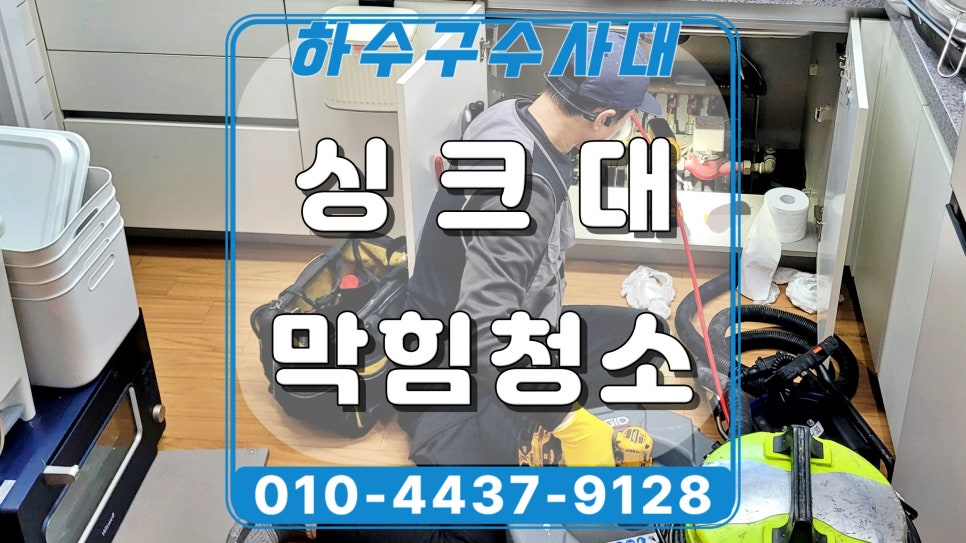
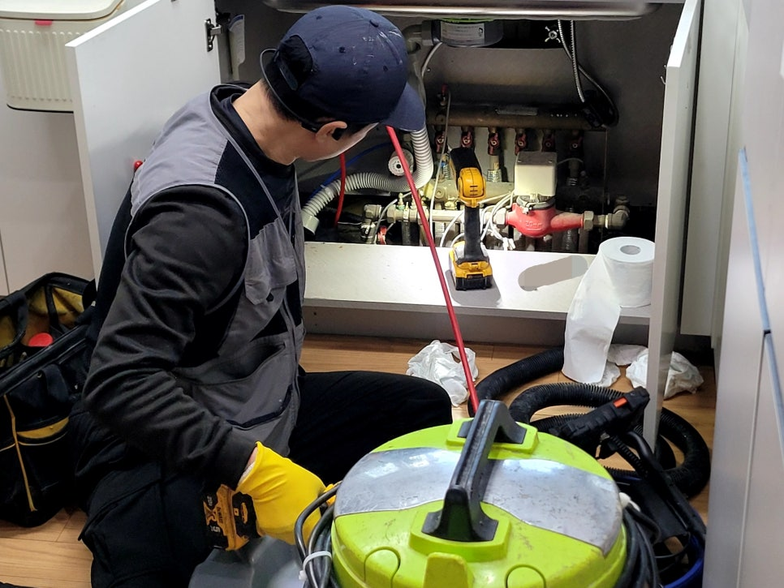
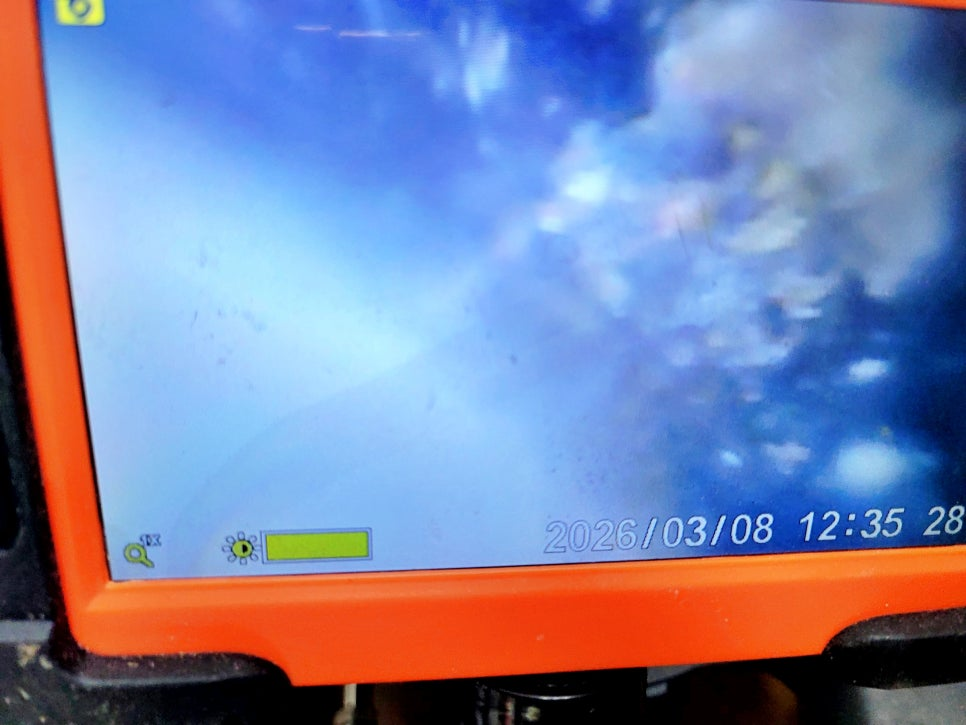
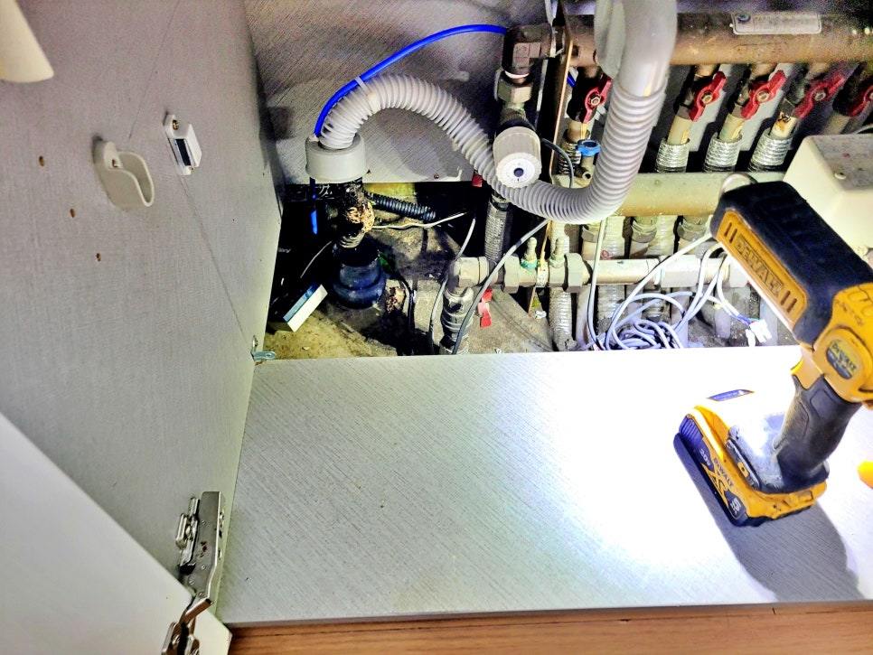
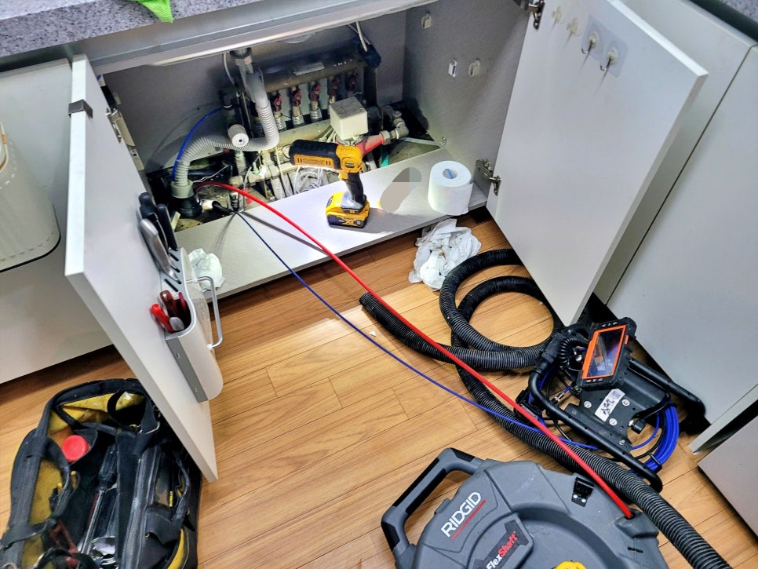
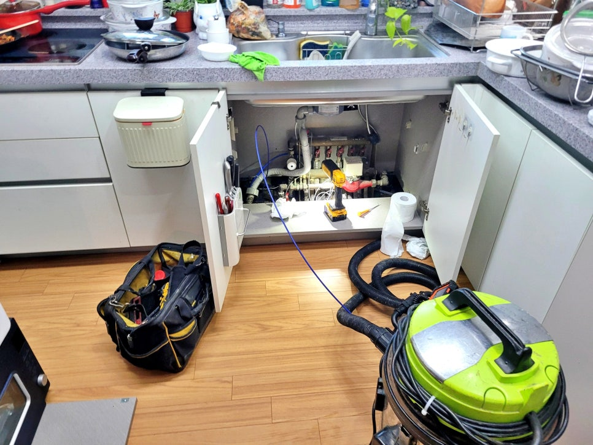
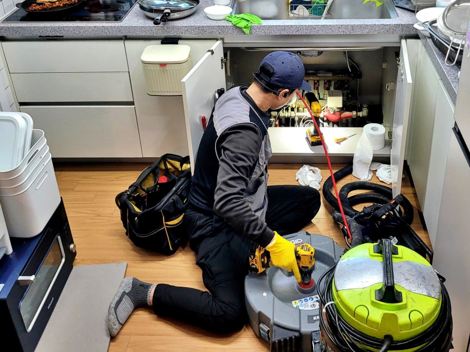

🏠 영통구 영통동 싱크대 배수구막힘, 배관 내시경 야간 청소작업
용인 싱크대막힘 전문 시공 후기

📋 작업 개요
- 위치: 용인
- 서비스 유형: 싱크대막힘, 하수구막힘, 배관막힘, 역류해결, 뚫는업체, 배관청소
- 작업 일시: 2026. 3. 30. 9:55
- 업체명: 하수구수사대 (010-5615-2118)
🔍 문제 상황
영통동 아파트 싱크대 배수구막힘 역류,
영통구 배관 내시경 야간 청소전문업체
안녕하세요?
영통구 영통동 싱크대막힘 역류
배관 내시경 청소전문업체
하수구수사대 인사드립니다.
오늘 소개할 현장 후기는
영통동 아파트 주방에서 배수가
점점 더뎌지다가 결국 역류해서
야간에 긴급 출동한 사례인데요.
영통동 싱크대 배수구막힘 현장에
출동해 보니 수조 안에 아직까지
역류한 물이 남아 있어서 저녁 식사
준비를 못하고 있는 상황이었습니다.
고객님 말씀으로는 그동안
청소 용액을 여러 번 부으며 임시로
사용했다고 하셨는데요. 이제는
한계에 이르러 결국 배관 안쪽에
쌓인 기름과 찌꺼기를 제거하기엔
무리가 있었던 것이었죠.
그럼 지금부터 이 문제를 어떻게

🔎 원인 분석
💡 전문가 진단: 영통동 아파트 싱크대 배수구막힘 역류,영통구 배관 내시경 야간 청소전문업체
해결해 드렸는지 살펴보겠습니다.
영통동 싱크대 배수구막힘 야간 청소
영통동 싱크대 배수구막힘 내부 모습
먼저 작업 전 배수 상황부터 정확히
살펴보기 위해 석션 장비로 고인 물을
흡입해 제거했는데요.
이후 내시경 카메라를 배수 호스
입구로 천천히 진입시켜 막힘 상태를
점검해 보았습니다. 화면상으로 배관
입구부터 기름때와 음식물 찌꺼기가
뭉쳐 붙어 통로가 좁아진 모습이
확인됐고 배수구 답답했던 원인이
드러났습니다.
영통구 영통동 싱크대 배수구막힘
원인을 고객님께도 내시경 화면을
직접 보여드리며 현재 내부 상태를
자세히 설명해 드렸는데요.
단순히 한 지점만 막힌 것이 아니라
배관 내벽 전체에 오염물이 두껍게
붙어 있어 그낭 통수만 하면
다시 막힐 가능성이 높다는 설명도
자세히 전달해 드렸습니다.

🔧 작업 과정
샤프트 장비를 사용해 막힌 구간을
본격적으로 뚫기 시작했는데요.
내시경 화면으로 어느 지점이 뚫리고
덜 청소가 됐는지 확인하면서
작업을 이어가니 불필요한 반복작업
없이 막힘 부분을 보다 정확하게
청소할 수 있었습니다.
잠시 후
영통동 싱크대 배수구막힘 역류 구간이
샤프트 작업으로 모두 뚫렸지만, 여기서
멈추지 않고 배관 안쪽에 남아 있는
기름 찌꺼기들을 함께 제거해야 향후
오랫동안 사용할 수 있기에 추가적인
스케일링 작업을 진행했는데요.
배관 청소를 진행한 뒤에는 다시
내시경 카메라로 여러 곳을 꼼꼼히
살펴보며 찌꺼기가 얼마나 남았는지
점검해 보니 대부분 제거되면서
좁아진 통로가 한층 넓어지고
내벽까지 깨끗해진 것을 확인할 수
있었습니다.
배관 내벽까지 깨끗하게 청소된 상태
마지막으로 싱크대 수조에 물을 많이
담아 배수 테스트를 진행했는데요.
이전과 달리 소용돌이를 일으키며
시원하게 내려가는 모습이 나타났고
고객님께서도 지금까지 답답하게
사용했으나 너무 좋아졌다면서
만족해하셨습니다.
배관 청소 후기를 마치며
오늘 소개한
역류 야간 청소 작업 현장은
출동부터 작업 마무리까지 약
1시간 반만에 깔끔하게 해결해드린
사례였는데요.


✅ 작업 완료
이번 현장처럼 싱크대 배수구에
막힘이나 역류 조짐이 보인다면
더 심해지기 전에 배관 청소전문
하수구수사대를 불러 주십시오.
이상으로
"영통구 영통동 싱크대 배수구막힘"
작업 후기를 마치겠습니다.
끝까지 읽어주셔서 감사합니다.
#영통구영통동싱크대배수구막힘 #영통동싱크대막힘 #영통동싱크대역류 #영통구주방배수구막힘 #영통구배관청소업체 #영통하수구업체 #영통구배관내시경점검업체 #




⚠️ 주방 싱크대 배관 막힘 예방 수칙
- ✅ 기름기가 묻은 식기나 프라이팬은 설거지 전 키친타올로 반드시 기름때를 닦아내세요.
- ✅ 주기적으로 싱크대 개수대에 뜨거운 물을 가득 받아 한 번에 내려 배관 내부 기름을 씻어내세요.
- ✅ 배수구 거름망을 미세한 필터로 사용하시고 음식물 찌꺼기가 틈으로 새어 들지 않게 관리하세요.
- ✅ 베이킹소다와 식초를 뜨거운 물과 함께 일주일에 한 번씩 부어주면 배관 살균과 막힘 예방에 좋습니다.
💡 핵심 정리
- 확실한 장비 작업(내시경 점검 및 샤프트 스케일링)으로 원인을 뿌리 뽑습니다.
- 작업 후 1년 이내에 동일한 부위 재발 시 100% 무상 A/S 서비스를 보장합니다.
- 서울 · 경기 · 인천 전 지역에 24시간 언제든 긴급 출동할 수 있도록 항시 대기 중입니다.
❓ 자주 묻는 질문 (FAQ)
🚨 용인 싱크대막힘 문제로 고민이신가요?
정확한 원인 진단과 확실한 시공으로 재발 없는 해결을 약속드립니다.
24시간 긴급 출동 | 서울 · 경기 · 인천 전지역 | 1년 내 재발 시 무상 A/S